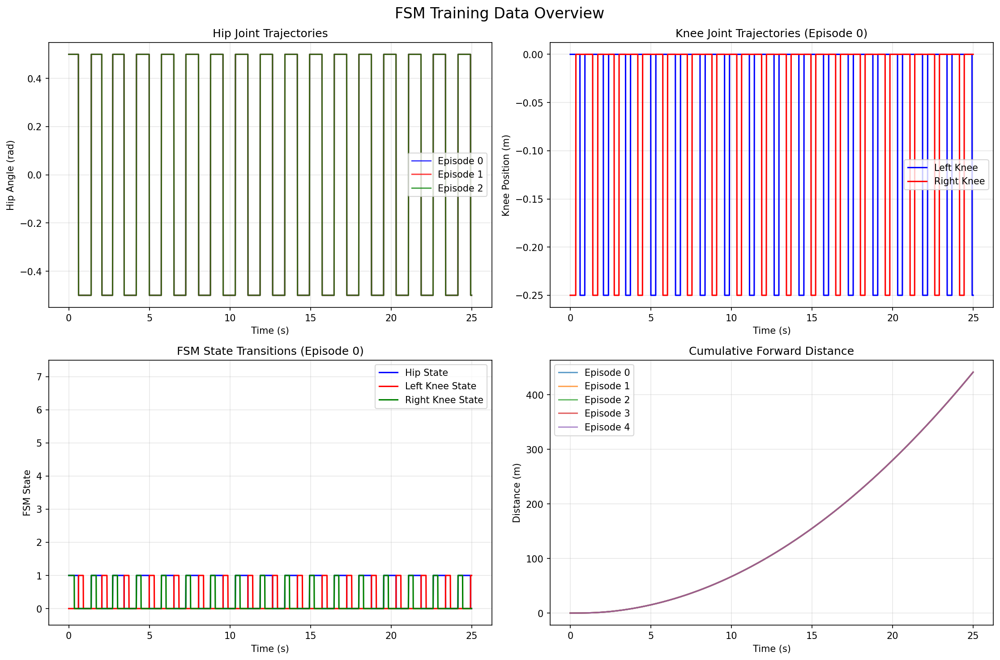
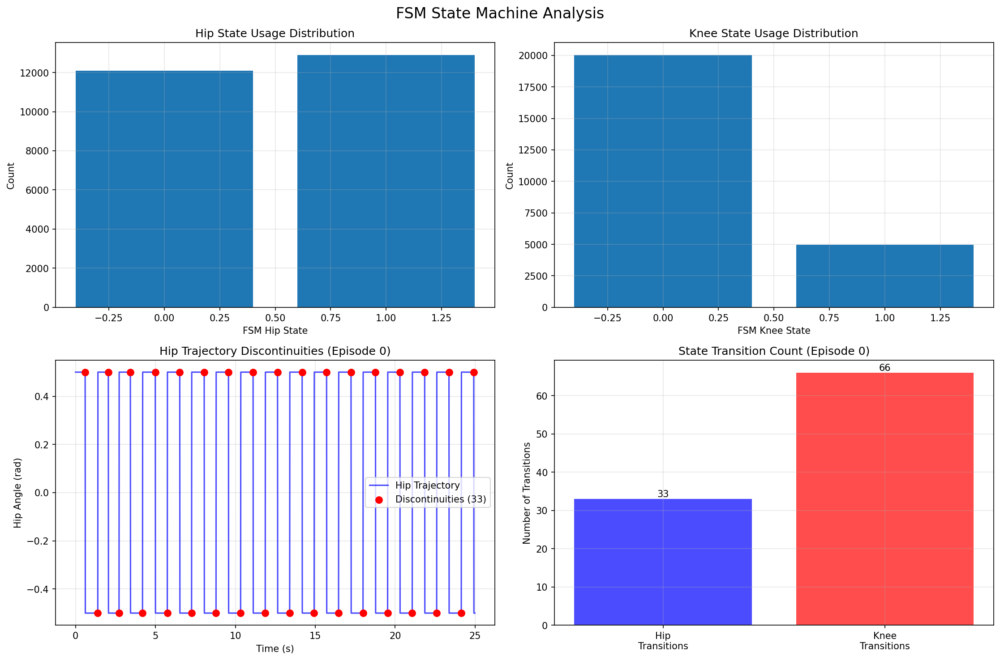
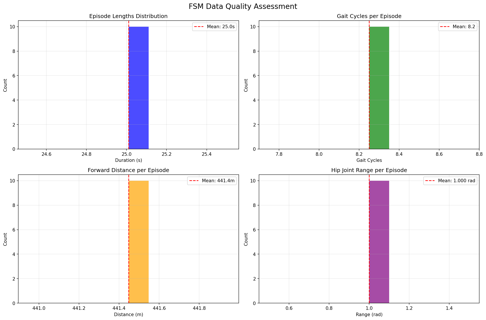
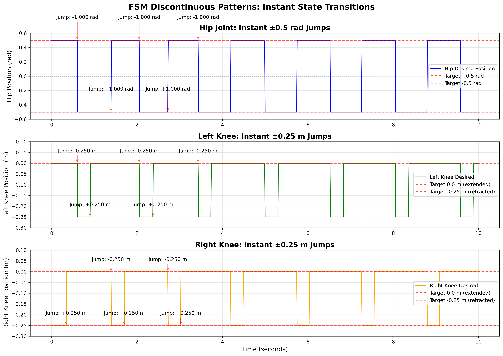
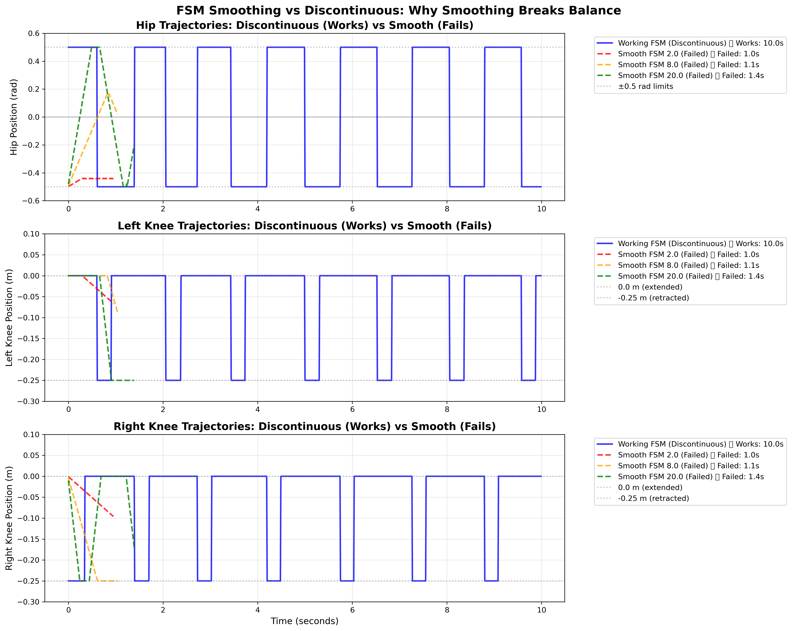
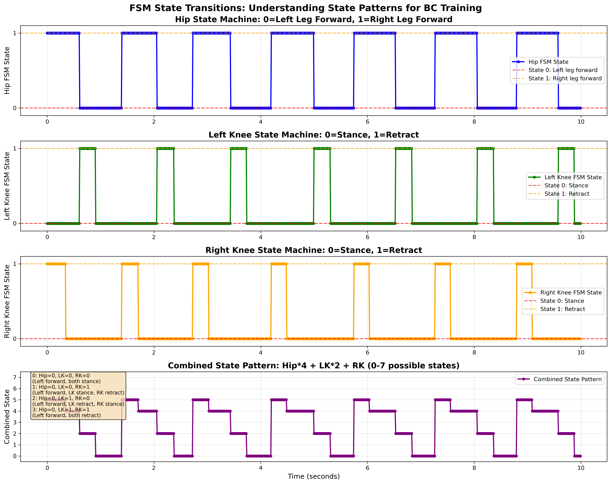
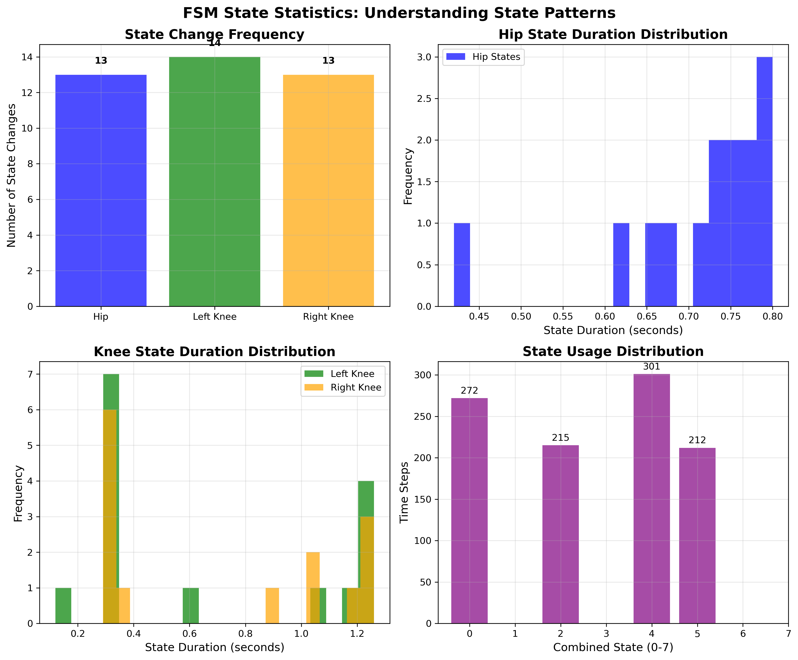

🔍 FSM Training Data Visual Analysis
Data Summary:
• 200 episodes collected
• 0% fall rate (perfect stability)
• 16 gait cycles per episode
• 35.9m average distance per episode
• 25.0 seconds per episode
1. Episode Overview (fsm_data_overview.png)

What to look for:
• Hip trajectories show rhythmic swinging patterns
• Knee trajectories show coordinated retraction
• FSM states transition regularly (not stuck)
• Forward progress increases consistently
2. FSM State Analysis (fsm_state_analysis.png)

What to look for:
• State usage distributions show balanced usage
• Red dots show hip discontinuities (by design)
• State transitions occur regularly
• Multiple states are being used effectively
3. Quality Metrics (fsm_quality_metrics.png)

What to look for:
• Episode lengths are ~25 seconds
• Gait cycles are ~16 per episode
• Forward distance is ~35.9m per episode
• Hip joint range is reasonable
Additional Analysis Plots
FSM Discontinuous Patterns

Shows the full view of FSM discontinuities - these are by design, not bugs.
Smooth vs Discontinuous Comparison

Comparison showing why FSM requires instant transitions for balance.
FSM State Transitions

Detailed view of FSM state transition patterns over time.
FSM State Statistics

Statistical analysis of FSM state usage patterns.
✅ Verification Checklist
- ✓ Hip trajectories show rhythmic swinging
- ✓ Knee trajectories show coordinated retraction
- ✓ FSM states transition regularly (not stuck)
- ✓ Forward progress is consistent
- ✓ Hip discontinuities are present (by design)
- ✓ Episode lengths are ~25 seconds
- ✓ Gait cycles are ~16 per episode
If all items are checked, the FSM training data is ready for BC training!